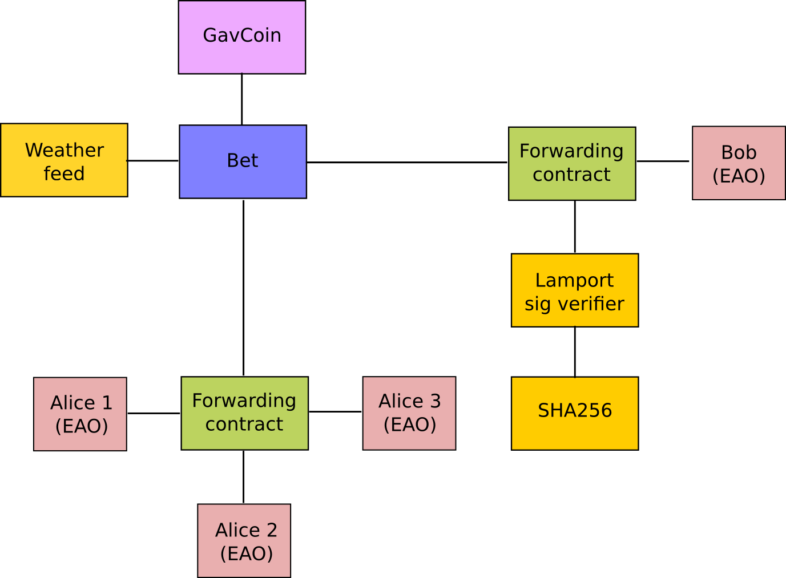

账户类型、气和交易¶
外部账户（EOA）和合约账户¶
- 以太坊中有两种类型的账户
- 外部账户（Externally Owned Accounts）
- 合约账户（Contracts Accounts）
合约账户¶
一个合约
- 有一个以太币余额
- 有关联代码
- 由交易或从其他合约收到的消息所触发执行
- 代码执行 - 可以处理任意复杂度的操作（图灵完备） - 可以操作它自己的持久化存储，比如可以有它自己的永久状态 - 可以调用其他合约
以太坊区块链上的所有动作，都被设定为由外部账户所发出的交易所触发。每当合约账户接收到交易，它的代码会根据作为交易的一部分传入的参数来具体执行。将在网络中每个节点上的以太坊虚拟机中被执行，并被作为它们对新区块的验证结果的一部分。
这种执行需要是完全可预测的，它仅有的上下文就是区块在区块链中的位置及所有可用数据。区块链上的区块相当于时间的单元，区块链自己即以时间维度记录着链上所有区块的状态变动历史。
所有以太币余额都被以wei为单位所记录：1以太币即是1e18wei（10的18次方Wei）。
Note
以太坊里的“合约”不该被认为是应该“实现”或“编译”，他们更像是以太坊运行环境中的“自治化的代理”，当被消息或交易所“插入”时会执行特定的代码，并且由它们自己的以太币余额所控制、由它们自己的键/值存储永久的状态。
什么是交易？¶
在以太坊中，所谓“交易”，是指存储了消息的签名数据包，在区块链上从一个外部账户发送到另外一个外部账户。
- 交易包含：
- 消息的接收方
- 一个用以标示发送方的签名，来证明他们通过区块链发送消息给接收方的意图
VALUE字段 - 由发送方向接收方转移的wei的数量- 一个可选数据字段，可以包含发送到某个合约的消息
STARTGAS值，代表交易执行所允许花费的最大可计算步骤（气）的数量GASPRICE值，代表发送方愿意为了气（gas）的消耗所支付的费用。一单位的气与执行一个原子操作对等，比如一个可计算步骤。
什么是消息？¶
合约可以发送“消息”给其他合约。消息是一些虚拟对象，他们不会被序列化，且仅存在于以太坊的执行环境中，他们可以被理解为函数调用。
- 一个消息包括：
- 消息的发送方（内置的）
- 消息的接收方
VALUE字段 - 伴随消息一起转移到合约地址的wei的数量- 一个可选数据字段，这是实际输入给合约的数据
STARTGAS字段，由消息所触发的代码执行所能引起的气的最大消耗数量
大体上讲，消息就像交易，除了它是由合约产生的，而不是外部用户。当合约代码执行 CALL 或 DELEGATECALL 操作码时会产生并执行一个消息。像交易一样，消息会导致接收者账号执行它的代码。这样，合约就可以与其他合约建立联系，就像外部用户之间用交易建立联系那样。
什么是气？¶
以太坊在区块链上实现了一个被称为以太坊虚拟机（EVM）的执行环境。网络中的每个节点都会将EVM作为区块校验协议的一部分来运行。它们会逐个检查正在验证的区块中的所有交易，并在EVM中执行这些交易所触发的代码。网络中的每个全节点都会进行相同的计算并保存相同的结果。显然，以太坊并不是在做计算效率的优化，它这种并行计算是无必要的；这是为了提供一种无需第三方、权威机构或垄断组织的方式来达到系统状态的共识。这当然不是为了优化计算，事实上，合约是在各个节点之上无必要的重复执行的，这使合约变得很昂贵。所以总体上说，并不鼓励在链上运行那些可以脱离区块链完成的计算。
当你在运行一个去中心化应用（dapp）的时候，它会使用区块链来读取和修改它的状态。但这些应用仅在区块链上存放那些对达成共识最为重要的业务逻辑和状态。
当一个合约被一个消息或交易触发而执行的时候，每个预设指令都会被在网络中的所有节点上执行。这会导致一个结果：每个被执行的操作都会有一个用气的数量来衡量的特定花销。
气是交易的发送方需要为在以太坊区块链上执行每个操作而支付的执行费用的名称。这个费用可以想象为一种驱动智能合约执行的加密燃油，气这个名称的灵感就来源于此。气是从那些执行代码的矿工那里用以太币的形式购置的。气和以太币被故意作为不同的概念，是因为气相当于计算单位的自然消耗，而以太币的价格一般会因市场原因而波动。一个自由市场会调和两者的关系：气的价格实际上是由矿工们决定的，它们可以拒绝那些气的价格低于它们的最低限的交易。要获得气，你只需要为你的账户添加以太币即可。以太坊客户端会根据你为交易所指定的最大开支自动用你的以太币购置气。
为了阻止故意的攻击或对以太坊网络的滥用，以太坊协议规定执行合约或交易中的每个计算步骤都需要支付费用。每个交易都需要包含气的上限和希望为每个气所支付的费用。矿工们可以决定是否包含某个交易并获得相应的费用。如果交易所产生的所有计算步骤（包含原始消息和可能被触发的所有其他消息）所需要的气的总量小于等于交易中指定的气的上限，交易会被处理。如果实际消耗的气的总量超过交易中气的上限，所有的变动都会被回复原样，除了交易仍然有效，且费用仍可以被矿工收取。所有在交易执行过程中没有被消耗的多余的气，会被作为以太币返还给发送方。你不需要担心超支，因为你最多只会被收取你在交易中所充入的所有气（即你为交易指定的气的上限，译者注）。这意味着为你的交易指定一个超出预估的气的上限是有用并且安全的。
估算交易的费用¶
一个交易的总费用取决于两个因素：
gasUsed 交易中所消耗的气的总量
gasPrice 交易中所指定的气的价格（用以太币为单位）
总费用 = gasUsed * gasPrice
gasUsed¶
EVM中的每个操作都会对应一个其消耗的气的数值。 gasUsed 即是所有操作所消耗的气的总和。 这份表格 提供了相关的一些分析。
这里有份 estimateGas API 可以帮助你预估 gasUsed ，但其中也有些需要小心的地方。
gasPrice¶
一个用户构造并签名了一个交易之后，每个用户都可以指定一个他们希望的 gasPrice ，这甚至可以设为0。然而，在Frontier版本的以太坊客户端中gasPrise会有一个默认值0.05e12 wei。由于矿工们会优化他们的收入，所以如果大多数交易的gasPrise都是0.05e12 wei的话，你就很难让矿工去接受一个低于这个数值甚至为0的gasPrise了。
交易费用示例¶
让我们使用一个仅仅对两个数字做加法的合约。EVM操作码 ADD 会消耗3个气。
使用默认气价（2016年1月时）的大概的费用为：
3 * 0.05e12 = 1.5e11 wei
由于1以太币等于1e18 wei，所以总费用等于0.00000015以太币。
这是一个简化，因为它忽略了一些费用，比如在两个数字被相加之前，它们需要先被发送给合约。
| Operation Name | Gas Cost | Remark |
|---|---|---|
| step | 1 | 每个执行循环的默认数额 |
| stop | 0 | 免费 |
| suicide | 0 | 免费 |
| sha3 | 20 | 哈希运算，译者注 |
| sload | 20 | 从永久存储获取数据 |
| sstore | 100 | 向永久存储保存数据 |
| balance | 20 | 获取余额，译者注 |
| create | 100 | 创建合约 |
| call | 20 | 开始只读调用 |
| memory | 1 | 扩大内存时每个额外的字 |
| txdata | 5 | 交易中的每字节数据或代码 |
| transaction | 500 | 基础交易费 |
| contract creation | 53000 | 在homestead版本中变更，从21000区块开始的创建合约费用 |
账户交互示例 - 对赌合约¶
如前文所述，有两种类型的合约：
- 外部账户（EOAs） ：由私钥控制的账户，如果你拥有EOA的私钥，你就可以用它来发送以太币或者消息。
- 合约账户 ：拥有自己的代码，并由代码控制的账户。
默认情况下，以太坊的执行环境是没有任何活动的，所有账户的状态都是一样的。然而，任何用户都可以从一个外部账户发送一个交易从而使以太坊开始运转。如果交易的发送目标是另一个外部账户，那么交易会转移一些以太币但没有任何其他事发生。而如果交易的发送目标是一个合约账户，那么合约就会被激活，其中的代码就会被运行。
这些代码可以从它所控制的内部存储（一个由32字节的键和32字节的值所构成的数据库）读写数据，可以读取接收到的消息，可以将消息发送给其他合约而触发它们的顺序执行。一旦合约执行结束，即所有由合约发送的消息所触发的执行（这是一个可预计的、同步的顺序，就是说父调用会等待子调用完全结束才会继续执行）都停止之时，执行环境会被再次挂起，直到下一个交易发生。
合约账户总体上说是为了4个目的而服务的：
- 维持一些对其他合约或者外部世界有用处的数据的存储。比如，用一个合约来模拟一种货币，或者用一个合约来记录参与特定组织的成员。
- 用来作为一种有更复杂的访问策略的外部账户，这可以叫做“forwarding contract”，它们可以在满足特定条件的情况下，将传入的消息转发给特定的接收方。比如，一个合约可以在得到3个特定私钥其中的两个对某个特定消息的确认之后，将消息进行转发（例如多重签名）。更复杂的“forwarding contract”可以根据消息的不同设置不同的条件。最简单的使用场景就是通过更为复杂的访问步骤来改变取回数据的限定条件。钱包合约就是一个很好的例子。
- 管理多个用户间的持续的合约或者特定的联系。这种例子包括财务合约、一些特定的第三方监管服务或某些保险。另有一种开放性的合约，由一方打开，其他参与方可以随时参加。这种合约的例子就是那种自动支付赏金给那些解决了某些特定的数学问题、或者证明自己提供了一些计算资源的人。
- 为其他合约提供函数，大体上可以认为是作为软件库来使用。
合约与其他合约交互的动作，是通过“调用（calling）”和“发送消息（sending messages）”完成的。一个“消息“，是包含了一定量的以太币、任意大小的字节数据和发送方、接收方地址的一个对象。当一个合约接收到一个消息时，它可以返回一些数据给消息发送方使用，这样，发送一个消息也就像调用一个函数一样。
因为合约可以扮演这些不同的角色，我们可以要求它们之间进行更多的交互。作为一个示例，我们可以想象一个情况：Alice和Bob正在打一个100 GavCoin的赌，赌旧金山下一年内的温度任何时候都不会超过35ºC。然而Alice是个很有安全意识的人，她的主账户使用了一个forwarding contract，只有当三分之二的私钥通过之后才能向外发送消息。Bob则是个对统计密码学持怀疑态度的人，所以他使用了一个只能发送由Lamport签名（一种一次性的单向签名算法，译者注）和传统ECDSA签名（即椭圆曲线签名算法，译者注）共同处理过的消息的forwarding contract（但因为他的守旧，他使用了一个以太坊不直接支持的基于SHA256的Lamport签名算法）。
这个对赌合约自己需要从其他合约取得旧金山的天气数据，它还需要和GavCoin合约交互，当它要实际给Alice或Bob（更准确地说，是给他们的forwarding contrack）发送GavCoin的时候。我可以用下图来表示账户间的关系：
当Bob希望结束对赌的时候，下述步骤将会发生：
1、一个交易被发出，触发一个由Bob的外部账户发送到他的forwarding contract的消息。
2、Bob的forwarding contract发送消息的哈希值和Lamport签名给一个用来做Lamport签名校验库的合约。
3、Lamport签名校验库发现Bob需要基于SHA256的Lamport签名，于是它需要调用SHA256库若干次来校验签名。
4、一旦Lamport签名校验库返回1，也就是说签名已经校验成功，它会给对赌合约发送一个消息。
5、对赌合约会检查提供温度数据的合约取得旧金山的温度数据。
6、如果对赌合约发现温度数据中有超过35ºC的数据，它就会给GavCoin合约发送一个消息，来将合约账户中的GavCoin转移到Bob的forwarding contract。
注意，GavCoin全部都在GavCoin合约的数据库中存储，上边步骤6中所说的“合约账户”是指GavCoin合约的内部会有一个以这个对赌合约地址为键，以其余额为值的数据项。当收到这个消息之后，GavCoin合约会从这个地址减掉一定的数额，给Bob的forwarding contract地址增加相应的数额。我们可以在下图中看到这些步骤：
离线签名交易¶
[ Maybe add this to the FAQ and point to the ethkey section of turboethereum guide? ]